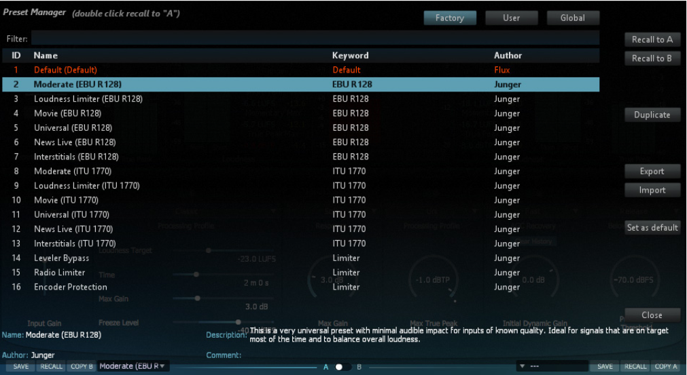
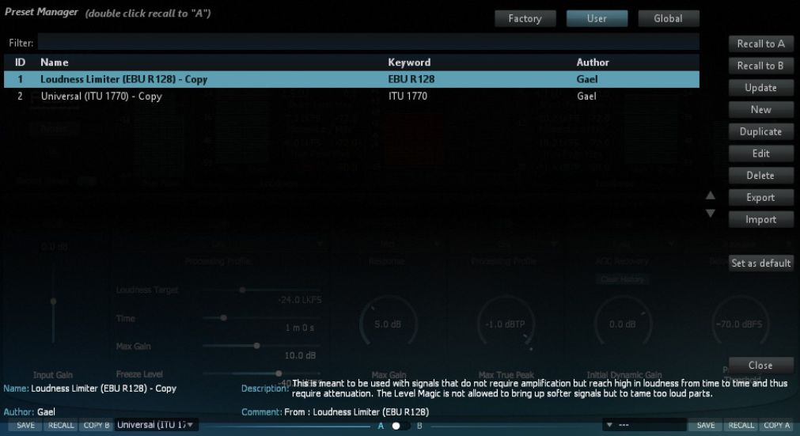

4 Preset Manager Window
The preset manager contains three preset banks:
- Factory bank - Contains factory presets. Saving presets in the Factory bank is not allowed, but any of the Factory presets can be recalled into a preset section and then saved into the User bank instead.
- User Bank - Contains user presets only.
- Global bank - Contains Global presets. A Global preset is a complete snapshot with all the settings from both of the preset sections as well as the position of the Preset A/B Switch (34).

Preset Manager - Factory Bank

Preset Manager - User Bank
| Additional controls in the preset manager window | Bank |
|---|---|
| Recall A Loads the selected preset into the corresponding slot. |
Factory, User, Global |
| Recall B Loads the selected preset into the corresponding slot. |
Factory, User, Global |
| Update Saves the current settings into the selected preset |
User, Global |
| New Saves the current settings into a new preset. |
User, Global |
| Duplicate Creates a copy of the selected preset and saves it to the preset bank. |
Factory, User, Global |
| Edit Allows for editing of the preset meta properties. |
User, Global |
| Delete Removes the selected preset. |
User, Global |
| Export Creates a file with the content of the current preset bank. |
Factory, User, Global |
| Import Import the content of a preset bank file to the preset bank. - Add: Adds the content in the preset bank file to the preset bank. - Replace: Replaces the content in the preset bank with the content from the preset bank file. - Merge: Updates the preset in the bank if the preset in the file originates from it, else it’s just added. |
Factory, User, Global |
| Set as default Makes the currently selected preset the default preset |
Factory, User, Global |
| Export default Exports only the default preset to a file. To import the default preset file for another user or machine, it has to be named DefaultPreset.xml and placed in: USERNAME/Documents/Flux/Nameoftheplugin/ and will then override the default preset if any. |
Factory |
4.1 Preset Protection
When saving or editing a preset an option to protect the preset is presented. The preset protection, if engaged, permits only the original preset author to disable the protection and edit the preset. This means that you can protect your presets in a multi-user configuration. Protected presets can only be modified using the session used for their creation. If used in another user session they can only be imported or deleted.